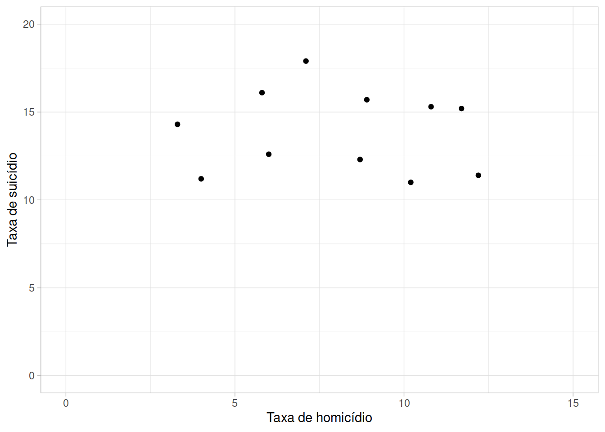
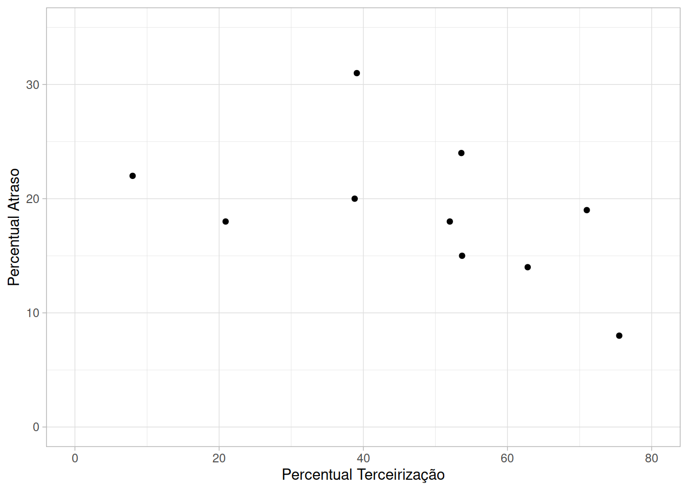
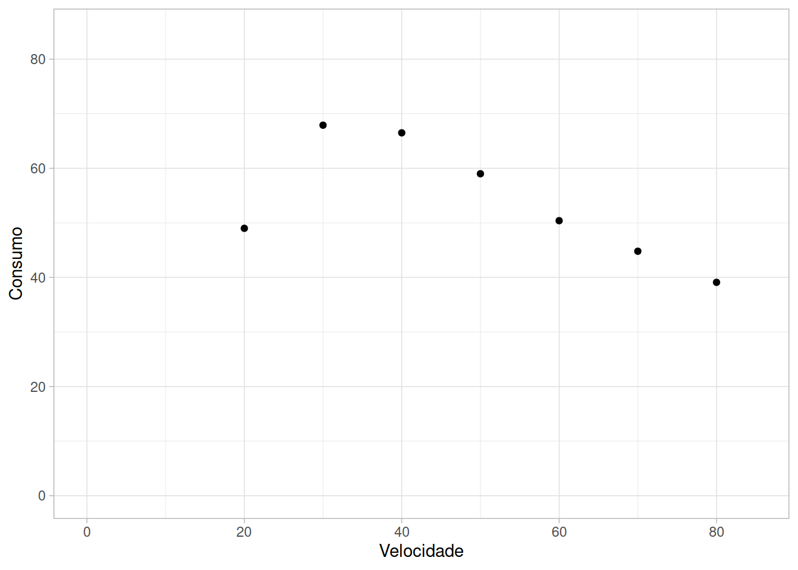
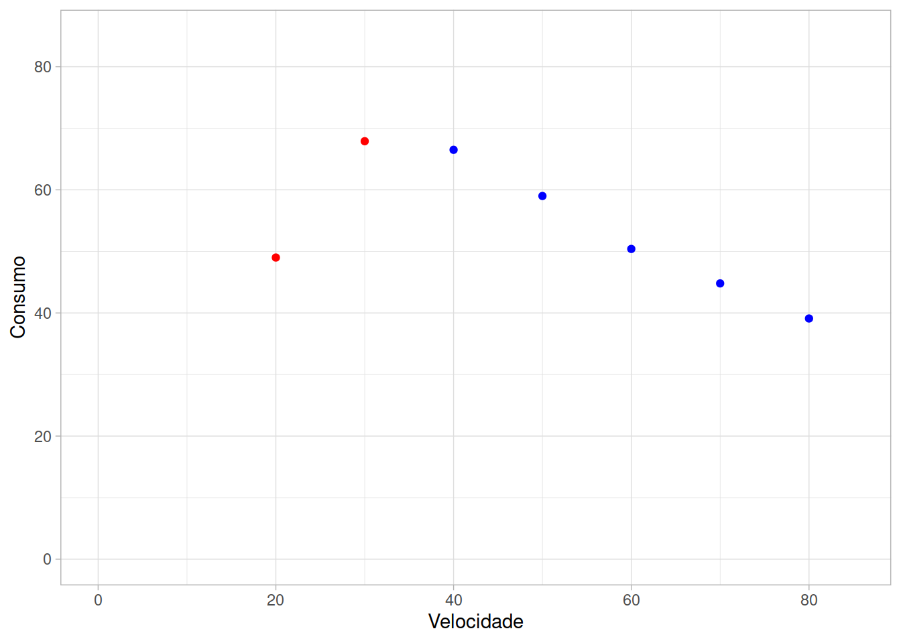
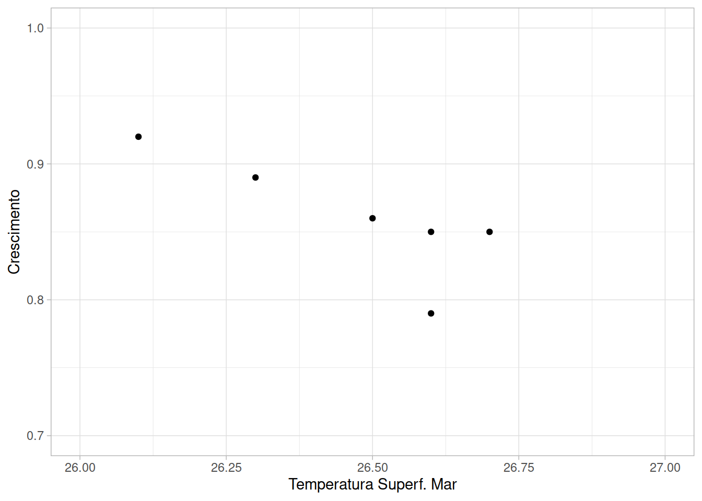
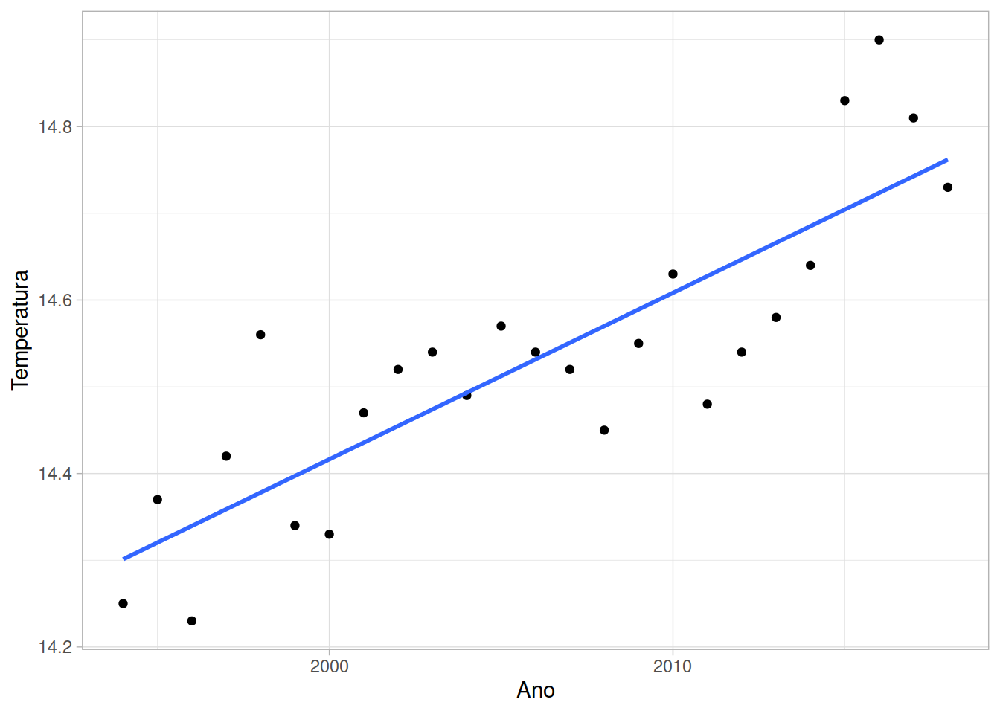

| Condado | Taxa de homicídio | Taxa de suicídio |
|---|---|---|
| Butler | 4.0 | 11.2 |
| Clark | 10.8 | 15.3 |
| Cuyahoga | 12.2 | 11.4 |
| Franklin | 8.7 | 12.3 |
| Hamilton | 10.2 | 11.0 |
| Lorain | 3.3 | 14.3 |
| Lucas | 6.0 | 12.6 |
| Mahoning | 11.7 | 15.2 |
| Montgomery | 8.9 | 15.7 |
| Stark | 5.8 | 16.1 |
| Summit | 7.1 | 17.9 |
Exercícios Diagramas Dispersão e Correlação
Análise de Dados | CC – FCI
- Homicídio e suicídio. A prevenção do suicídio é um problema importante encarado pelos trabalhadores da saúde mental. A previsão de regiões geográficas onde o risco de suicídio é alto poderia ajudar as pessoas a decidir onde aumentar ou melhorar os recursos e cuidados com a saúde. Alguns psiquiatras argumentaram que homicídio e suicídio podem ter algumas causas em comum. Nesse caso, seria de se esperar que as taxas de homicídio e suicídio fossem correlacionadas. E se isso é verdade, áreas com altas taxas de homicídio poderiam ter previsão de altas taxas de suicídio e, portanto, merecedoras de mais recursos para a saúde mental. A pesquisa tem tido resultados mistos, incluindo alguma evidência de que há uma correlação positiva em certos países europeus, mas não nos EUA. Eis os dados de 2015 para 11 condados em Ohio com dados suficientes para homicídios e suicídios para permitir uma estimativa de taxas para ambos. As taxas são por 100 mil pessoas.
Faça um diagrama de dispersão para verificar se taxas de homicídio e suicídio são correlacionadas. Para esses dados, estamos simplesmente interessados em explorar a relação entre as duas variáveis, de modo que nenhuma variável é uma escolha óbvia para a variável explicativa. Por conveniência, use a taxa de homicídio como variável explicativa e taxa de suicídio como resposta.
Show the code
ggplot(homicidiosuicidio) +
geom_point(aes(x=`Taxa de homicídio`, y = `Taxa de suicídio`)) +
scale_x_continuous(limits = c(0,15)) +
scale_y_continuous(limits = c(0,20)) +
theme_light()
- Terceirização pelas companhias aéreas. As companhias aéreas têm terceirizado, de modo crescente, a manutenção de suas aeronaves para outras companhias. Uma preocupação externada por críticos é que a manutenção pode ser feita de maneira menos cuidadosa, de modo que a terceirização cria uma condição de perigo. Além disso, os atrasos são constantes, devido a problemas de manutenção, de modo que se devem examinar os dados do governo sobre percentuais das principais manutenções terceirizadas e percentuais de atrasos em voos atribuídos à companhia, para determinar se a preocupação se justifica. Isso foi feito e os dados de 2005 e 2006 parecem justificar a preocupação dos críticos. Dados mais recentes justificam essa preocupação? Eis os dados para 2018.
| Companhia | Percentual Terceirização | Percentual Atraso |
|---|---|---|
| Alaska | 62.8 | 14 |
| Allegiant | 8.0 | 22 |
| American | 38.8 | 20 |
| Delta | 53.7 | 15 |
| Frontier | 39.1 | 31 |
| Hawaiian | 75.5 | 8 |
| JetBlue | 71.0 | 19 |
| Southwest | 53.6 | 24 |
| Spirit | 20.9 | 18 |
| United | 52.0 | 18 |
Faça um diagrama de dispersão que mostre a relação entre atrasos e terceirização
Show the code
terceirizacao %>%
ggplot() +
geom_point(aes(x = `Percentual Terceirização`, y = `Percentual Atraso`)) +
scale_x_continuous(limits = c(0,80)) +
scale_y_continuous(limits = c(0,35)) +
theme_light()
- Dirigir rápido desperdiça gasolina? Como muda o consumo de gasolina de um carro quando sua velocidade aumenta? A seguir, estão os dados para um Volkawagen Jetta Diesel de 2013. A velocidade foi medida em milhas por hora, e o consumo de combustível, em milhas por galão.
| Velocidade | Consumo |
|---|---|
| 20 | 49.0 |
| 30 | 67.9 |
| 40 | 66.5 |
| 50 | 59.0 |
| 60 | 50.4 |
| 70 | 44.8 |
| 80 | 39.1 |
- Faça um diagrama de dispersão. (Qual é a variável explicativa?)
- Descreva a forma da relação. Ela não é linear. Explique por que a forma da relação faz sentido.
- Não faz sentido descrever as variáveis como positivamente associadas ou negativamente associadas. Por quê?
- A relação é razoavelmente forte ou bem fraca? Explique sua resposta.
- Faça um diagrama de dispersão. (Qual é a variável explicativa?)
A variável explicativa é Velocidade, porque queremos saber como o Consumo de combustível varia conforme variamos a Velocidade.
Show the code
consumo_x_velocidade %>%
ggplot() +
geom_point(aes(x=Velocidade,y=Consumo)) +
scale_x_continuous(limits = c(0,85)) +
scale_y_continuous(limits = c(0,85)) +
theme_light()
A relação não é linear; uma possível explicação é porque os veículos são mais eficientes em termos de consumo em velocidades mais altas (pelo menos até certo limite de velocidade).
Como o gráfico apresenta uma relação não linear, não faz sentido indicar se a relação é positiva ou negativa para todos os pontos; aparentemente, entretanto, podemos dizer que para velocidades de até 30mph, temos uma relação positiva e a partir de 30mph temos uma relação negativa.
Show the code
ggplot(consumo_x_velocidade) +
geom_point(data=filter(consumo_x_velocidade,Velocidade <= 30), aes(x = Velocidade, y=Consumo), color ="red") +
geom_point(data=filter(consumo_x_velocidade,Velocidade > 30), aes(x = Velocidade, y=Consumo), color ="blue") +
scale_x_continuous(limits = c(0,85)) +
scale_y_continuous(limits = c(0,85)) +
theme_light()
- Considerando a primeira parte dos dados, até 30mph, temos uma relação positiva forte; para os dados a partir de 30mph, a relação é positiva, mas de menor intensidade.
- Recifes de coral. Considere um estudo feito por cientistas, que examinaram dados sobre as temperaturas médias da superfície do mar (em graus Celsius) e o crescimento médio de corais (em centímetros por ano), durante um período de vários anos, em localizações do Golfo do México e do Caribe. Eis os dados para o Golfo do México:
| Temperatura Superf. Mar | Crescimento |
|---|---|
| 26.7 | 0.85 |
| 26.6 | 0.85 |
| 26.6 | 0.79 |
| 26.5 | 0.86 |
| 26.3 | 0.89 |
| 26.1 | 0.92 |
- Faça um diagrama de dispersão. Qual é a variável explicativa? O gráfico mostra um padrão linear negativo.
- Encontre a correlação r passo a passo. Você pode querer arredondar os dados para duas casas decimais em cada passo. Primeiro, encontre a média e o desvio-padrão de cada variável. Determine, então, os seis valores padronizados para cada variável. Finalmente, use a fórmula de r. Explique como seu valor para r coincide com a direção do padrão linear em seu gráfico da parte (a).
- Digite, agora, esses dados em sua calculadora ou em um software e use a função correlação para encontrar r. Verifique se você obteve o mesmo resultado que em (b), a menos de erros de arredondamento.
- Faça um diagrama de dispersão.
Show the code
tempgolfmexico %>%
ggplot() +
geom_point(aes(x=`Temperatura Superf. Mar`,y=Crescimento)) +
scale_x_continuous(limits = c(26,27)) +
scale_y_continuous(limits = c(0.7,1)) +
theme_light()
A variável explicativa é a Temperatura da Superfície do Mar, já que o estudo visa entender sua influência sobre o Crescimento dos corais. Pelo gráfico temos um padrão aproximadamente linear negativo.
- Encontre a correlação r passo a passo.
Desvio Padrão de cada variável:
| Temperatura Superf. Mar |
Crescimento | xi - x̅ | yi - y̅ | (xi - x̅)2 | (yi - y̅)2 |
|---|---|---|---|---|---|
| 26.7 | 0.85 | 0.233 | −0.01 | 0.054 | 1.000 × 10−4 |
| 26.6 | 0.85 | 0.133 | −0.01 | 0.018 | 1.000 × 10−4 |
| 26.6 | 0.79 | 0.133 | −0.07 | 0.018 | 0.005 |
| 26.5 | 0.86 | 0.033 | 0 | 0.001 | 0 |
| 26.3 | 0.89 | −0.167 | 0.03 | 0.028 | 9.000 × 10−4 |
| 26.1 | 0.92 | −0.367 | 0.06 | 0.134 | 0.004 |
Com os valores de xi-xbar e de yi-ybar e os respectivos quadrados, podemos calcular os desvios padrões, dado pela fórmula \[s = \sqrt{\frac{1}{n-1}\sum((x_i - \bar{x})^2)}\]
Considerando n como 6:
- Primeiro, a soma dos quadrados \((x_i - \bar{x})^2\): 0.2533333; dividindo por \(n-1\): 0.050667; restando então, extrair a raiz quadrada.
- Depois, a soma dos quadrados \((y_i = \bar{y})^2\): 0.0096; dividindo por \(n-1\): 0.00192; restando então, extrair a raiz quadrada.
- O desvio padrão da Temperatura da Superfície do Mar é então \(s_{temp}\) = 0.2251; o cálculo pelo R resulta em 0.2250926.
- O desvio padrão do Crescimento é \(s_{cresc}\) = 0.0438; o cálculo pelo R resulta em 0.0438178.
Agora vamos calcular os produtos \[\left(\frac{x_i - \bar{x}}{s_x}\right)\left(\frac{y_i - \bar{y}}{s_y}\right)\] Para facilitar, vamos adicionar mais três colunas na tabela:
| Temperatura Superf. Mar |
Crescimento | xi - x̅ | yi - y̅ | (xi - x̅)2 | (yi - y̅)2 | (xi - x̅)/sx | (yi - y̅)/sy | Produto |
|---|---|---|---|---|---|---|---|---|
| 26.7 | 0.85 | 0.233 | −0.01 | 0.054 | 1.000 × 10−4 | 1.037 | −0.228 | −0.237 |
| 26.6 | 0.85 | 0.133 | −0.01 | 0.018 | 1.000 × 10−4 | 0.592 | −0.228 | −0.135 |
| 26.6 | 0.79 | 0.133 | −0.07 | 0.018 | 0.005 | 0.592 | −1.598 | −0.946 |
| 26.5 | 0.86 | 0.033 | 0 | 0.001 | 0 | 0.148 | 0 | 0 |
| 26.3 | 0.89 | −0.167 | 0.03 | 0.028 | 9.000 × 10−4 | −0.74 | 0.685 | −0.507 |
| 26.1 | 0.92 | −0.367 | 0.06 | 0.134 | 0.004 | −1.629 | 1.369 | −2.231 |
Fazemos então a soma da coluna “Produto” = -4.0555355, e dividimos por \(n-1\), o que dá r = -0.8111071
- Calculando pelo R, utilizamos a seguinte expressão
cor(tempgolfmexico$`Temperatura Superf. Mar`,tempgolfmexico$Crescimento)Show the code
cor(tempgolfmexico$`Temperatura Superf. Mar`,tempgolfmexico$Crescimento)
[1] -0.8111071Os valores coincidem, dentro dos erros de arredondamento.
- Aquecimento global. As temperaturas médias globais têm aumentado nos anos recentes? Aqui estão as temperaturas médias globais anuais para os últimos 25 anos, em graus Celsius:
| Ano | Temperatura |
|---|---|
| 1994 | 14.25 |
| 1995 | 14.37 |
| 1996 | 14.23 |
| 1997 | 14.42 |
| 1998 | 14.56 |
| 1999 | 14.34 |
| 2000 | 14.33 |
| 2001 | 14.47 |
| 2002 | 14.52 |
| 2003 | 14.54 |
| 2004 | 14.49 |
| 2005 | 14.57 |
| 2006 | 14.54 |
| 2007 | 14.52 |
| 2008 | 14.45 |
| 2009 | 14.55 |
| 2010 | 14.63 |
| 2011 | 14.48 |
| 2012 | 14.54 |
| 2013 | 14.58 |
| 2014 | 14.64 |
| 2015 | 14.83 |
| 2016 | 14.90 |
| 2017 | 14.81 |
| 2018 | 14.73 |
Discuta o que os dados mostram sobre a mudança nas temperaturas médias globais ao longo do tempo
Estabeleça: A questão deste problema é examinar a mudança nas temperaturas médias globais no período dado.
Planeje: Como temos dados anuais, de 1994 a 2018, podemos criar um gráfico de dispersão para essa visualização.
Resolva:
Show the code
aquecglobal %>%
ggplot(aes(x = Ano, y = Temperatura)) +
geom_point() +
geom_smooth(method = lm, se = FALSE) +
theme_light()
Conclua: Como podemos ver do gráfico acima, há uma clara tendência de crescimento das temperaturas médias globais. A linha azul é uma linha de regressão apenas para facilitar a visualização da correlação positiva de intensidade moderada entre Ano e Temperatura.
Show the code
tempinic <- aquecglobal[which(aquecglobal == min(aquecglobal$Ano)),"Temperatura"]
tempfinal <- aquecglobal[which(aquecglobal == max(aquecglobal$Ano)),"Temperatura"]
deltatemp <- round(((tempfinal - tempinic)/tempinic)*100,2)
tempmin <- min(aquecglobal$Temperatura)
tempmax <- max(aquecglobal$Temperatura)
deltatemp2 <- round(((tempmax - tempmin)/tempmin)*100,2)Entretanto, precisamos tomar cuidado com a maneira como fazemos gráficos; no exemplo acima, a escala em y não começa em zero, e a amplitude dos dados é muito pequena: 0.67.
Se considerarmos o valor da temperatura para o ano inicial (1994=14.25) e ano final (2018=14.73), o aumento percentual de temperatura para esse período é de 3.37%.
Se considerarmos o valor mínimo (14.23) e máximo (14.9) da temperatura durante este período, o aumento percentual de temperatura é de 4.71%.